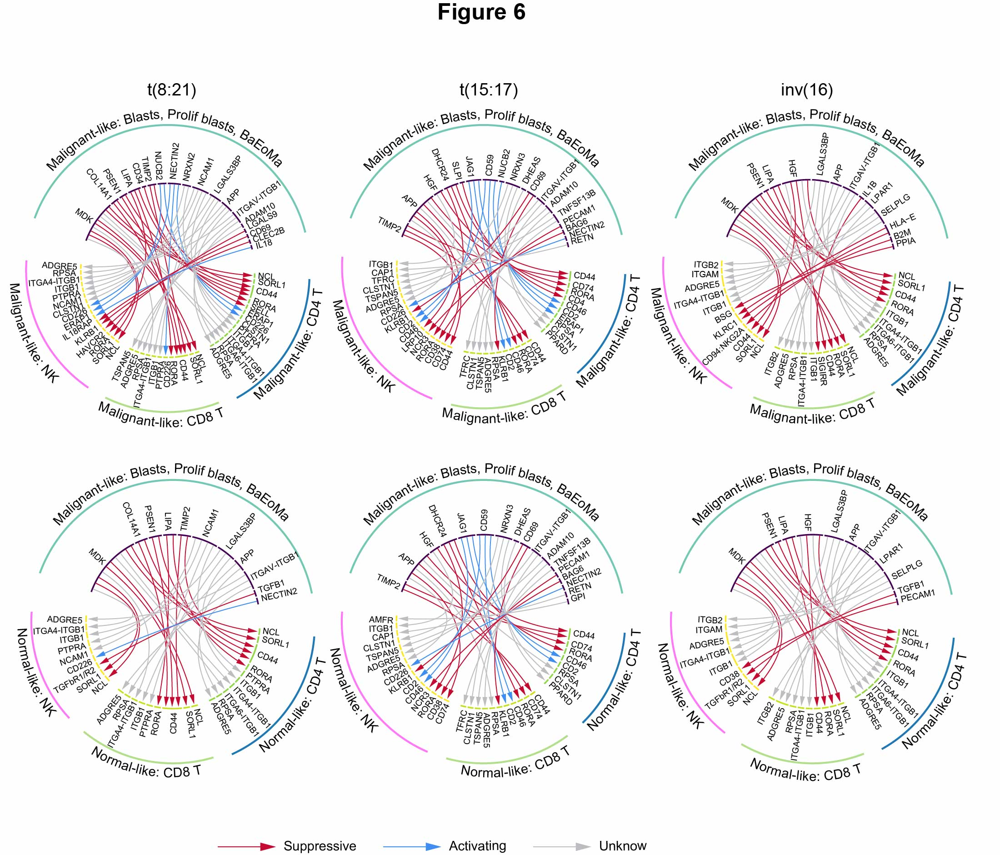

6 Figure 6
 Fig.6 | Immune suppression induced by ligand-receptor interactions between immature malignant-like blasts and T/NK cells.
Circle plots of the predicted ligand-receptor interactions between malignant-like blasts (blasts, proliferating blasts, and BaEoMa) and various immune lymphocytes, including malignant-like (upper panel) CD4 T cells, CD8 T cells, and NK cells, as well as normal-like (bottom panel) immune lymphocytes in t(8;21), t(15;17), and inv(16) AML subtypes. Red, blue, and gray arcs represent suppressive, activating, and unknown interactions, respectively.
6.1 Circle plots
g_name <- c("M2AE.M_M", "M3PR.M_M", "M4CM.M_M", "M2AE.M_U", "M3PR.M_U", "M4CM.M_U")
for (g in g_name){
connect <- read.xlsx(paste0(in_dir, "Table.cellchat.lr_order.xlsx"), sheet = 1) %>%
filter(!is.na(eval(parse(text = g)))) %>% dplyr::select(ligand, receptor, color) %>% distinct()
arr.col = read.xlsx(paste0(in_dir, "Table.cellchat.lr_order.xlsx")) %>%
filter(!is.na(eval(parse(text = g)))) %>% dplyr::select(ligand, receptor, color) %>% distinct()
g_len1 <- read.xlsx(paste0(in_dir, "Table.cellchat.lr_order.xlsx"), sheet = 1) %>%
filter(!is.na(eval(parse(text = g)))) %>% pull(ligand_2) %>% unique() %>% length()
g_len2 <- read.xlsx(paste0(in_dir, "Table.cellchat.lr_order.xlsx"), sheet = 1) %>%
filter(!is.na(eval(parse(text = g)))) %>% filter(target %in% "CD4T") %>% pull(receptor_2) %>% unique() %>% length()
g_len3 <- read.xlsx(paste0(in_dir, "Table.cellchat.lr_order.xlsx"), sheet = 1) %>%
filter(!is.na(eval(parse(text = g)))) %>% filter(target %in% "CD8T") %>% pull(receptor_2) %>% unique() %>% length()
g_len4 <- read.xlsx(paste0(in_dir, "Table.cellchat.lr_order.xlsx"), sheet = 1) %>%
filter(!is.na(eval(parse(text = g)))) %>% filter(target %in% "NK") %>% pull(receptor_2) %>% unique() %>% length()
pdf(paste0(out_dir, "Fig6", g, ".lr.pdf"), width = 4, height = 4)
# parameters
circos.clear()
circos.par(start.degree = 160,
gap.after = c(rep(1, g_len1 - 1), 16, rep(1, g_len2 - 1), 8, rep(1, g_len3 - 1), 8, rep(1, g_len4 - 1), 16),
track.margin = c(-0.3, 0.3), points.overflow.warning = F)
par(mar = c(0, 0, 0, 0))
# color palette
k <- length(unique(c(connect$ligand, connect$receptor)))
n <- length(unique(connect$ligand)) + 1
mycolor <- rep(c("#440154", "#8FD744", "#C7E020", "#FDE725"), c(g_len1, g_len2, g_len3, g_len4))
myorder <- c(connect$ligand, connect$receptor) %>% unique()
# Base plot
chordDiagram(x = connect[, 1:3], grid.col = mycolor, col = c("white"),
order = myorder,
transparency = 0.9,
directional = 1, direction.type = c("arrows", "diffHeight"), diffHeight = -0.02,
annotationTrack = "grid", annotationTrackHeight = c(0.01, 0.1),
# link.arr.type = "big.arrow",
link.arr.length = 0.2,
link.arr.col = arr.col,
link.sort = T, link.largest.ontop = T,
preAllocateTracks = list(track.height = mm_h(2), track.margin = c(mm_h(2), 0))
)
# Add text and axis
circos.trackPlotRegion(
track.index = 1, bg.border = NA,
panel.fun = function(x, y) {
xlim = get.cell.meta.data("xlim")
ylim = get.cell.meta.data("ylim")
sector.index = get.cell.meta.data("sector.index")
# Add names to the sector.
circos.text(x = mean(xlim) + 0.25, y = -8, adj = -0.05,
labels = sector.index, facing = "clockwise", cex = 0.7, niceFacing = T)
}
)
## # Add group info
brand <- setNames(unlist(lapply(myorder, function(x) unlist(str_split(x, "_"))[1])), myorder)
brand_color <-setNames(c("#73C8B4", "#1F78B4", "#B2DF8A", "#FF77F8"), c("Progs", "CD4T", "CD8T", "NK"))
for(b in unique(brand)) {
model = names(brand[brand == b])
highlight.sector(sector.index = model, track.index = 1, col = brand_color[b], padding = c(-0.7, 0, 0, 0),
text = b, text.vjust = -0.5, niceFacing = TRUE)
}
dev.off()
}